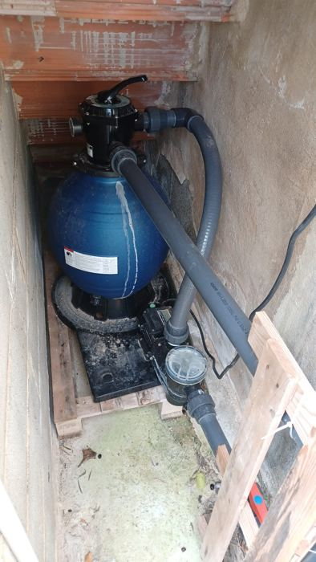

1Pump plugged in?
The timer runs the pump around midday. That is all it needs.
If the battery is low and you unplug it: please plug it back in when the sun is back.
About 5 minutes once a week. Thank you!
Green water is OK for now. Nobody swims in winter. We only want to stop it from getting worse. The big clean-up happens on the next visit.

The timer runs the pump around midday. That is all it needs.
If the battery is low and you unplug it: please plug it back in when the sun is back.

You don't need to read the colours. We do that.

The round gauge on the filter, while the pump is running:
Take out floating leaves with the net. Leaves feed the algae and eat the chlorine.
Please add chlorine only when we ask you, after your test strip photo. We will tell you which product and how much.
That is why the pump matters most.